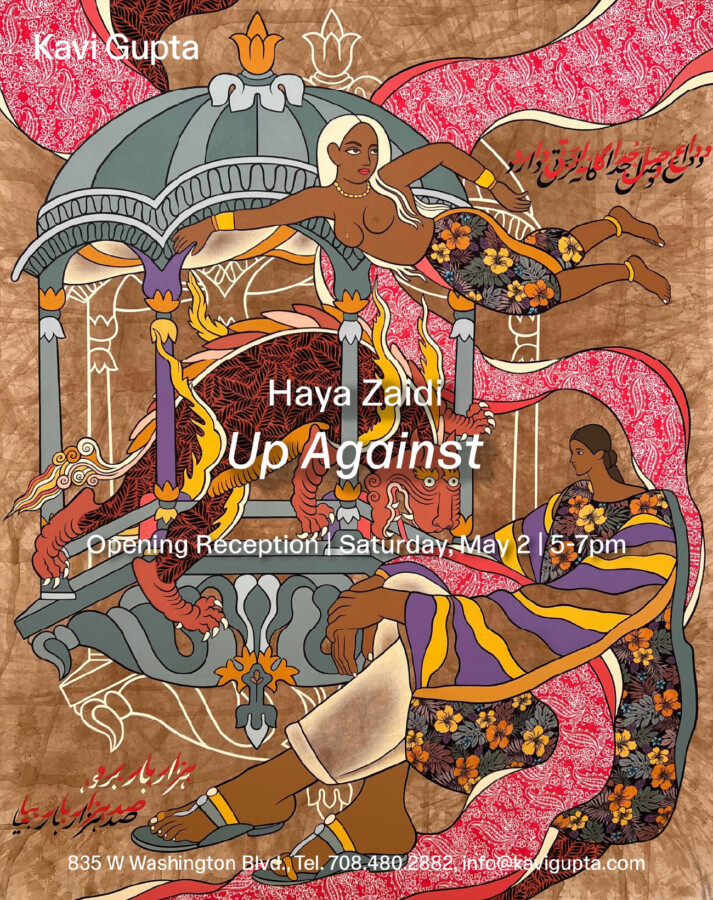

Haya Zaidi: Up Against
Join us to celebrate the official opening of Haya Zaidi’s Up Against, the artist’s first solo exhibition in the United States, marking a significant milestone in her practice.
Karachi-based multidisciplinary artist Haya Zaidi works at the convergence of Indo-Persian miniature painting, mixed media, and contemporary feminist discourse. Grounding her practice in the visual and literary lineages of South Asia, Zaidi examines how the brown female body becomes a contested site of inheritance, mythology, and resistance. Through intricate symbolism and layered narrative, she reconfigures archetypal imagery to articulate a selfhood shaped by both cultural memory and the psychic interiority of womanhood.
Zaidi’s work interrogates the iconography of femininity and the systems that script its representation. Drawing from South Asian mythological frameworks and the codified language of Indo-Persian miniature traditions, she constructs new visual propositions for how the feminine may be claimed, embodied, and reimagined. Her compositions speak to questions of sovereignty and interior power, exploring how women create agency within, and in spite of, the structures that circumscribe them.
This body of work draws inspiration from classical South Asian and Sufi narratives – poems like Gulshan-i ‘Ishq, Madhumalati, Hamzanama, and other mythic romances – in which a recurring motif unfolds: a man undertakes perilous journeys through dark forests, confronts fearsome beasts, and ultimately rescues a princess, a figure often depicted as helpless, without agency. Zaidi revisits these stories and their characters, rewriting their narratives to reflect a contemporary perspective on women’s lives, power, and autonomy. She reimagines the monstrous and ferocious imagery of these manuscripts, transforming demons into whimsical, cartoon-like figures that coexist with women rather than threaten them. Through this intentional shift, Zaidi proposes that once fears or harmful myths are confronted, they lose their power – and can even appear absurd or playful. By situating women as active, self-determined participants rather than passive figures to be saved, her paintings interrogate and subvert the traditional fairy tales and Sufi myth, recontextualizing them for a contemporary lens.
In her paintings, Zaidi’s protagonists share space with these mythical creatures, befriending them, confronting them head-on, or remaining entirely un-reactive to their presence. Their calm, surrendered stature embodies a quiet power. Within this space, Zaidi establishes the foundation for a new kind of storytelling: one that centers the lives of the women in and around her own.
Working within the Indo-Persian miniature painting tradition, Zaidi expands its material possibilities through fabric as a primary surface. Having grown up in a culture where textiles are deeply embedded in everyday life and identity – particularly for women – she collects leftover fragments from tailoring processes and clothing from the women she knows: materials that are imbued with personal meaning. These pieces carry the imprint of touch, domestic life, and lived experience. By incorporating this material into her paintings, Zaidi moves through a collective memory, giving form to the stories of the countless South Asian women who have had to unlearn generations of constraints in order to embrace their full sovereignty and step into their power.
Zaidi constructs her figures and fantastical landscapes through tracing, cutting, collage, and assemblage, integrating miniature painted surfaces with textiles rooted in South Asian visual traditions and Islamic geometric and floral design. Much like identity itself, these compositions are built from fragments-of memory, culture, religion, and lived experience-so that the surface of each work becomes a site where personal and cultural histories, as well as distinct visual traditions, converge and unfold in tandem.